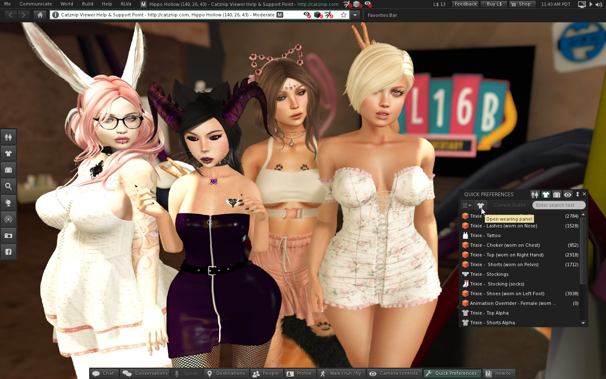
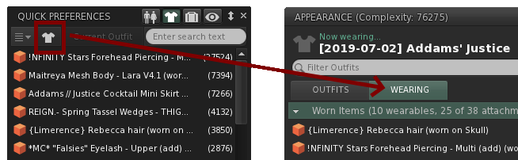
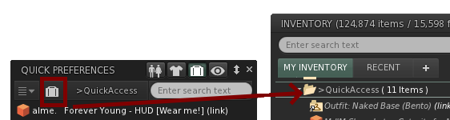
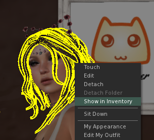
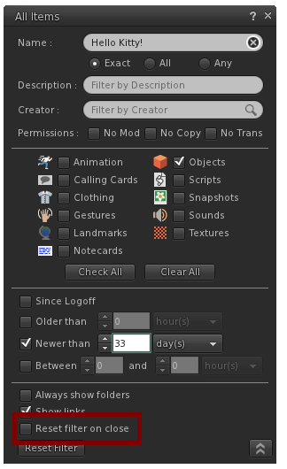
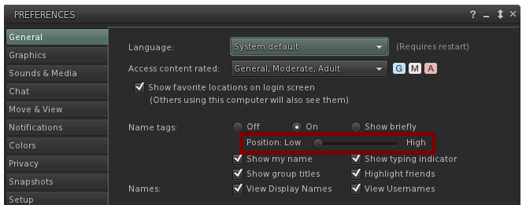
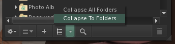

Catznip R12.2

This is largely a maintenance and 'quality of life' release. I’m trying to do these more frequently (ideally every couple of months) and decouple them from the major releases with all of the new shiny in them.
Unlike a major release there will only be a short transition period during which the previous release is still useable. After 2 weeks or so (starting around July 19th) the new release will become mandatory for all users. If you experience any problems please alert us sooner rather than later (or make a feedback submission from the viewer!).
Also, if you haven't been yet, Ȼᴏƒƒєα made an awesome Catznip TV for SLB @ http://maps.secondlife.com/secondlife/SL16B%20Captivate/237/166/24 (I helped decorate it!) There's only a few days left to go and see it (July 8th) so hurry up!...
Finally, a big, big thank you to all the people who keep supporting us on Patreon! I've finally managed to track some (well, two) of you down in-world and you can see Kitten & Butta in this release's picture. Hopefully we can include some more of you in the next couple of releases 😊.
Highlights
We’ve had some really good feedback about the new release notes format for the past 2 release so I’ll keep trying to highlight new (or changed) features with a little blurb attached 😊.
Quick preferences
The ‘Worn Items’ and ‘Quick Inventory’ panels on the ‘Quick Prefs’ floater were introduced in R12 and have been a big hit. R12.2 just adds some more improvements to them:
- CATZ-475 - Add button to open wearing panel to the 'Worn Items' quickprefs panel Clicking the shirt icon on the ‘Worn Items’ quick prefs panel will open its larger brother.

- CATZ-476 - Add button to open the selected folder to the 'Quick Access' quickprefs panel Similarly, the new inventory icon on the ‘Quick Inventory’ panel will open your inventory with that folder selected and opened.

Show in Inventory
- CATZ-501 - Add 'Show in Inventory' to the worn attachment context menu An ‘OMG how did we not think of this ourselves?!’ request by a user adds a highly useful menu item to the right-click menu of any attachment:
Clicking the menu item will open your inventory with the attachment’s inventory item visible and selected.

Clear inventory filter on close
- CATZ-494 - Option to reset the inventory filter when closing the filter floater A user reported that it wasn’t obvious to them that closing the inventory filter floater wouldn’t reset / clean up the filter options on that floater so I added an option to do just that in case other people are similarly confused. With the option checked, closing the floater will have the same effect as clicking the ‘Reset Filters’ button.

Hover name tag offset
Another user request of a simple feature: by default the sliders is all the way to the left. Dragging it to the right will increase the distance between the name tag and the avatar.

‘Collapse All Folders’ vs ‘Collapse To Folders’
- CATZ-491 - Added "Collapse To Folders" option on the inventory gear menu to close all currently visible folders containing items The ‘collapse’ button has been there for a long time now on the inventory toolbar and resets your current inventory view to just showing only the top-level folders. However, sometimes you typed in a keyword (or otherwise filtered your inventory) and want to see the folders, but not the items.

Minor improvements
- CATZ-464 - Add the Ctrl-Backspace key combination to delete the previous word
- CATZ-489 - Change the object's group on the build floater to be a clickable link
Bugfixes
- CATZ-461 - Right-click inventory offer / Show Inventory Item yields an error
- CATZ-462 - Clicking on the inventory item SLurl doesn't preview the item when 'ShowNewInventory' is FALSE
- CATZ-472 - New inventory isn't shown when the tab has a "between 0 and X hours/days" filter active
- CATZ-480 - Group notice toasts show the group SLurl rather than the resolved group name
- CATZ-485 - Object inventory sent while offline doesn't appear in inventory
- CATZ-486 - Camera and movement floater visibility is cleared on teleport disconnects
- CATZ-493 - Viewer fails to start when Windows username contains a non-Latin character
- CATZ-496 - German About Land Unusable
- CATZ-502 - User interface issue on the German About Land floater
- CATZ-504 - IMs and notifications sometimes fail to be delivered at login
- CATZ-505 - Experiences - 'The runtime script permission requested isn't recognized by the viewer and can't be granted'
- CATZ-506 - L$ balance is sometimes not available after logging in
- CATZ-511 - System graphics end up distorted after logging off/closing viewer
- CATZ-513 - Login page does not appear on the first run of a brand new Catznip install
- CATZ-514 - Viewer crashes on the first run after a successful install on Windows 7
- Text overruns on the region restart floater on non-English languages
- SLurl is shown on the inventory accept toast
- Buttons on the crash report preferences panel overlap the recent crash list
- LLPersistentNotificationStorage::loadNotifications() take too long during log-on
- LLInitClass constructed UI elements don't have access to the spellchecker
Crash fixes
- CRASH-26 - Logout crash
- CRASH-27 - Crash when an animesh horse goes out of draw distance (most often on Bellisseria)
- CRASH-28 - Crash when cancelling out of the upload file picker
- CRASH-29 - Crash when attempting sorcery (aka opening floaters after quitting the viewer)
- CRASH-30 - Crash when opening the conversation history
- CRASH-31 - Crash when attempting to apply a local texture
- CRASH-32 - Crash when logging on with certain chatty HUDs attached
- CRASH-33 - Crash when opening the conversation history #2
RLVa
- CATZ-509: RLVa Add @getheightoffset to get the current offer height (with @adjustheight's scale)